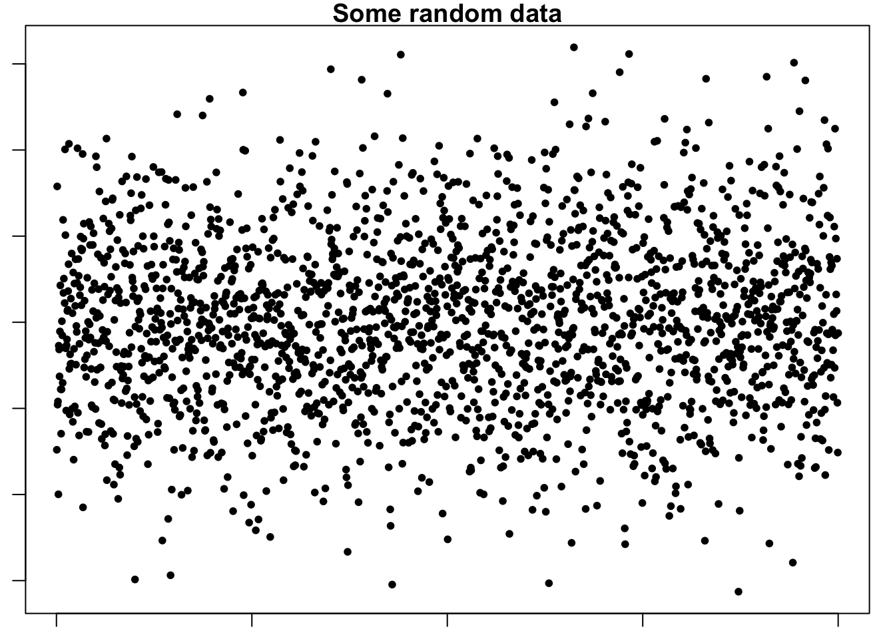
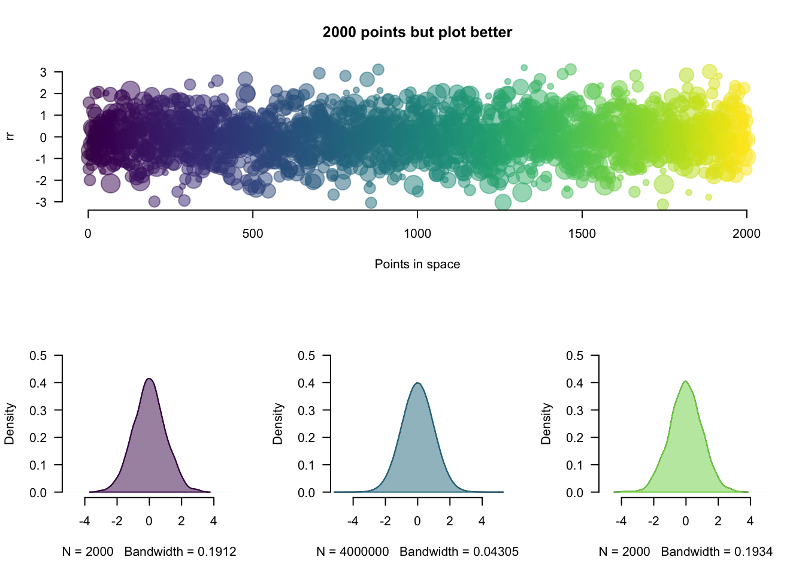

Using RMarkdown for reproducible and neat documents
Your name here
Your affiliation here
Date: 2019-10-26
R version: 3.5.0
*Corresponding author: Your email here
Overview
This document showcases how to create and use RMarkdown documents.
You can easily create headings. This is a first order heading.
Then move down in heading order size
Like this subheading
And this fourth order heading
You can write in bold and italicised text (in two different ways).
You can write in-line code if you want to differentiate between when you are typing normally or highlighting model parameters, for example.
Equations like this \(t' = \gamma(t - vx/c^{2})\), to appear within text lines.
Create links to your website.
Make footnotes1.
Insert line breaks
between text like this, which works best in large
slabs of text
Insert a horizontal line break using five asterisks (‘*****’)
The raw Rmd file also has the code for inserting user comments.
(There is also a page break here. Best seen in PDF. Check the raw Rmd file to see the code)
Define equations
Accordingly, we write the eigenfunction of a spinless particle as the superposition of plane wave states of momentum (\(\pi\)) and energy (\(E_{j}\)) having amplitudes \(a(\pi,E_{j})\) (from [1]). \[ \phi n(r,t) = \sum_{i, j} a(p_{i},E_{j}) e^{ \frac{i} {h} (p_{i} \cdot r - E_{j}t) } \]
Embed images/gifs:
 .
.
Create, alter, and embed plots

Figure 1. Example of a stock plot embedded into a PDF from RMarkdown.
Show plots with associated code
suppressWarnings(require(viridis))
bm <- 0
par(las=1,bty="n"); xlim <- c(-5,5);ylim <- c(0,0.5)
set.seed(12)
N <- 2000
rr <- rnorm(N); rr2 <- rnorm(N^2); rr3 <- rnorm(N+0.3)
rrd <- density(rr);rrd2 <- density(rr2);rrd3 <- density(rr3)
main <- paste0(N," points but plot better");xlab <- "Points in space"
if(bm==1){
layout(matrix(c(rep(1,3),2:4), 2, 3, byrow = TRUE));sc <- 1
plot(rr,las=1,bty="n",col=adjustcolor(viridis(N),0.5),pch=20,cex=runif(10,1,5),
main=main,xlab=xlab)
for(r in list(rrd,rrd2,rrd3)){
plot(r,xlim=xlim,ylim=ylim,main="")
polygon(r,col=adjustcolor(viridis(250)[sc],0.5),border=viridis(250)[sc]);sc <- sc+100}
}else{par(mfrow=c(1,1))
plot(rr,las=1,bty="n",col=adjustcolor(viridis(N),0.5),pch=20,cex=runif(10,1,5),
main=main,xlab=xlab)}
Figure 2. Example of a plot with improved graphics and its associated code embedded into the output document from RMarkdown.
And tables
Table 1. Definitions of model parameters for individual hosts and parasites. Dimensions and units: -, dimensionless; cm, centimetres; J, Joules; L, length.
| Parameter | Definition | Dimension (unit) |
|---|---|---|
| L | structural length | cm |
| ee | scaled reserve density | J (cm3) |
| D | host development | — |
| RH | energy in reproduction buffer | J |
Embed code from different languages
This is R code
if(pck==1){
p<-c("rJava", "RNetLogo"); remove.packages(p)
# then install rJava and RNetLogo from source
install.packages("rJava", repos = "https://cran.r-project.org/")
install.packages("RNetLogo", repos = "https://cran.r-project.org/")
}shell/bash
echo "Hello Bash!"
pwd # check working dir
git init # initialise gitOctave (and MATLAB from the RMatlab package).
b = [4; 9; 2] # Column vector
A = [ 3 4 5;
1 3 1;
3 5 9 ]
x = A \ b # Solve the system Ax = bHTML
<!-- links-->
<div class="footer">
<a href="dd_feed.html"
class="transition fade_in">
Latest post
</a>
<a href="dd_contact.html"
class="transition fade_in">
Contact
</a>
<a href="dd_subscribe.html"
class="transition fade_in">
Subscribe
</a>
</div>CSS
# custom code for the tabs in this file
.btn {
border-width: 0 0px 0px 0px;
font-weight: normal;
text-transform: ;
}
.btn-default {
color: #f08080;
background-color: #ffffff;
border-color: #ffffff;
}Javascript to access html and css
$('.title').css('color', 'red')Python
x = 'hello, python world!'
print(x.split(' '))Here’s a complete list of available languages
names(knitr::knit_engines$get())## [1] "awk" "bash" "coffee" "gawk" "groovy"
## [6] "haskell" "lein" "mysql" "node" "octave"
## [11] "perl" "psql" "Rscript" "ruby" "sas"
## [16] "scala" "sed" "sh" "stata" "zsh"
## [21] "highlight" "Rcpp" "tikz" "dot" "c"
## [26] "fortran" "fortran95" "asy" "cat" "asis"
## [31] "stan" "block" "block2" "js" "css"
## [36] "sql" "go" "python" "julia" "sass"
## [41] "scss"References
[1] Efthimiades, S., Physical meaning and derivation of Schrodinger and Dirac equations, Department of Natural Sciences, Fordham University, doi: d34464566.
Here is the footnote you created earlier, automatically formatted↩